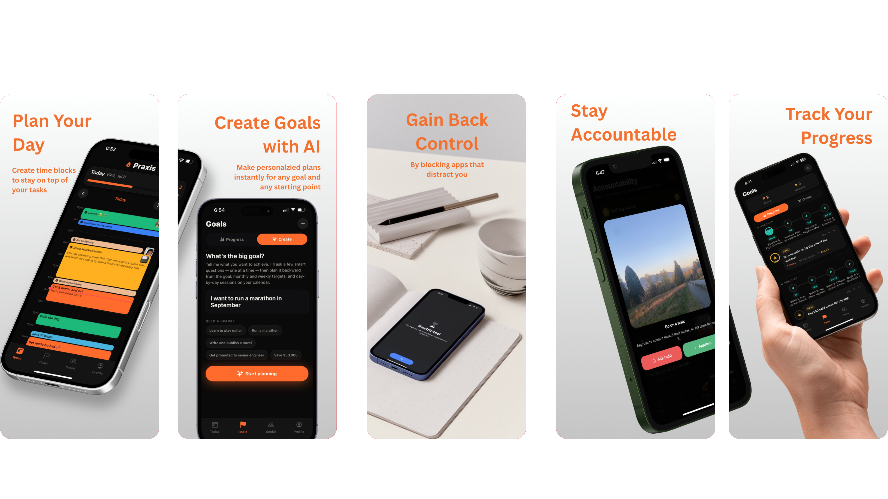
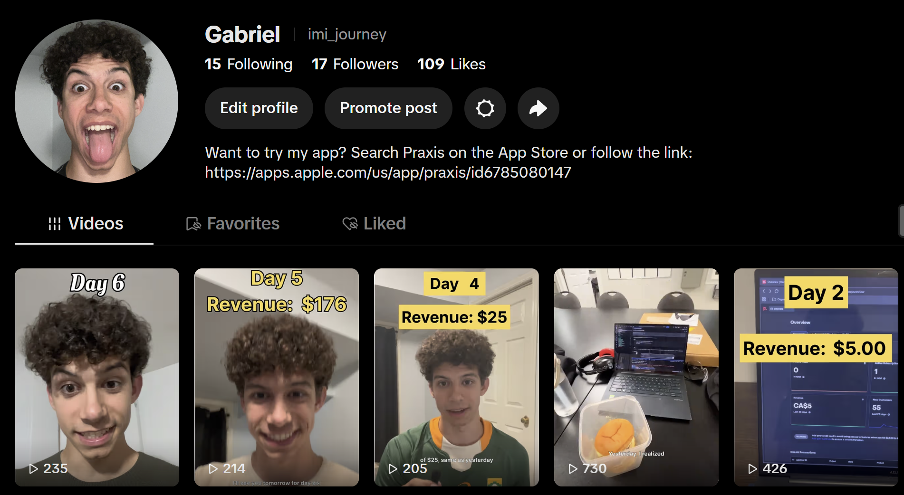
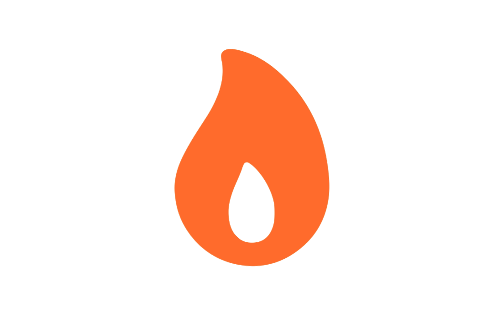

- TimelineJuly 2026 to Present
- Built with Expo + React Native (mobile) · Web (React) · Supabase (backend/auth)
- Linksusepraxis.ca · App Store ·

I was a procrastination demon, and my go-to method; YouTube. I could not find a good way to consistently stay off that app when times got stressful, so I decided to build a solution that I knew would work for me.
This led to Praxis, an iPhone app that listens to your goals, blocks out time for you to work on them, holds you accountable, and will not let you get distracted by blocking all other apps during your work periods.
What Will Actually Help People?
This was my first mobile app, so on top of not knowing anything about app design, I didn't even know what people needed to stay focused isntead of getting distracted by social media
Before building anything, I conducted a series of interviews with people I could see using the app to ask them about their habits, what enables or prevents them from reaching their goals, and what kinds of apps they would download if they came across
The Build
The app took around a month and a half to launch. It was fully vibe-coded using Claude Code.
My process was not very efficient - I was exceited to just have something rather than something good, so I didn't do much planning and started by building what I initially thought I wanted to app to be. This made it so that I had to go back through and redo a lot of it. To a certain point this is necesary since you don't know exactly how something will work until you have it, but my process could definetly be improved by planning a bit more before starting the build
Just as how Burger King's strategy for choosing a location was to go wherever McDonald's was going, off-loading all the research to their competitor, I tried immitating big apps (like google calendar) as much as possible.
Submitting to the App Store took a but of trial and error, but that only delayed the launch by about a week. I documented my advice for App Store submissions in my App Store Submissions Guide.

Marketing
This app gave me my first marketing experience. I set up TikTok and Youtube accounts to create short-form content to gain users. I accumulated a couple thousand views between the two platforms, but didn't manage to convert many people.
Some challenges I had were managing time between improving the app and creating videos to market it, and not knowing how to actually make engaging content since I have never done it before. I definitly saw that the best way to learn is by doing, so when I need to market again, I know to make lots of videos and try to improve one thing each time.
When people ask Mr. Beast advice on how to make better videos, he just tells them to make 100 videos first and then he'll help them. He says that nobody return to him because 95% of people don't care enough to make the 100 videos, and the 5% who do learn how to make better videos by posting 100 times.
What I learned
This was my first go at entrepreneurship, so there is lots that I would do differently and keep in mind for next time.
80-20 Rule
80% of your results normally come from 20% of your work. For early stage app/business development when speed is a priority, I need to focus on the 20% more. I found it easy to get distracted to do work that on the surface level seems productive, but really was just a waste of time.
Things like spending hours getting the aestetics right rather than going to a university campus and talking directly to students to practice selling. The 20% is the hard stuff that I like to avoid, so a rule I will follow is if it makes me unconfortable, then I need to do it first.
Embrace Rejection
I have had a big fear of rejection my whole life. This app showed me that having a fear of rejection is a good way at getting zero users and zero feedback
I need to seek out rejection since it is the only way I will learn how to sell and create oportunities to connect with cool and ambitious people. I've made first steps at getting over this fear by askking for discounts when I buy things, knowing the answer will likley be no, and using that to desensitize myself
Talk To As Many People As Possible
This point is similar to the last one, but I need to talk to more people and gain more feedback. I found myself guessing a lot about what features to have and how they should work, even after all my initial interviews. Next time, instead of guessing, I need to launch, ask, and iterate, as quickly and often as possible.
